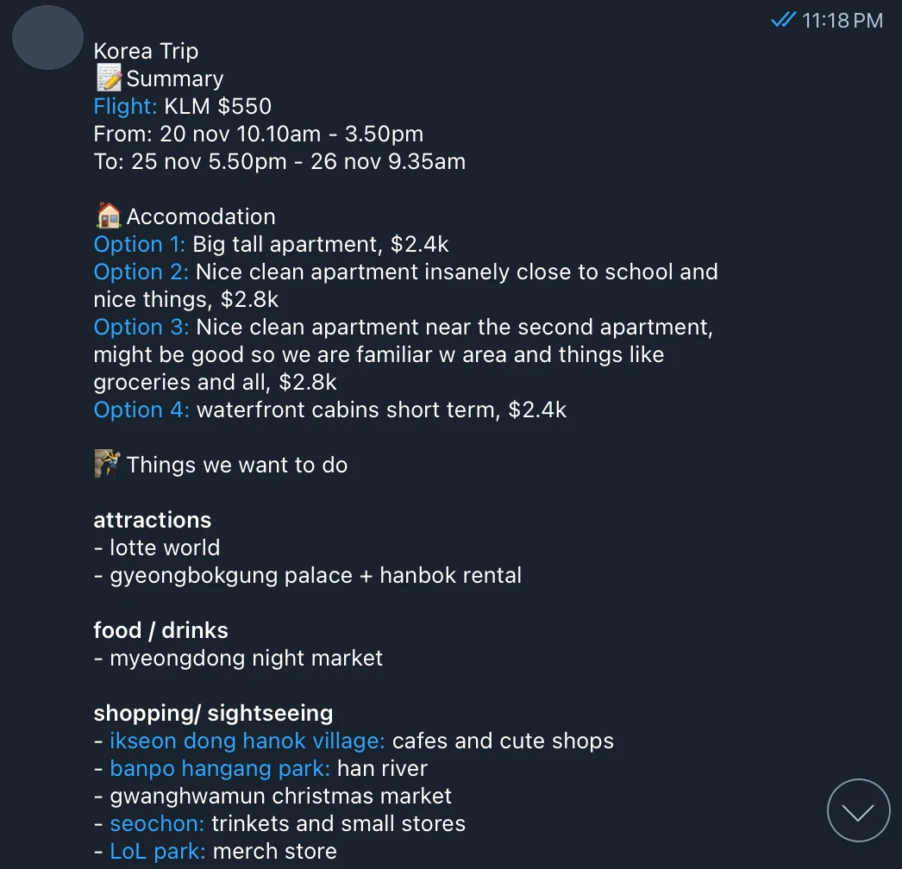

Software · NUS Fintech × HeyMax
Telegram Bot for Trip Planning
A collaboration between NUS Fintech Society and HeyMax to reduce planning chaos in Telegram group chats by turning scattered travel links into a structured, AI-assisted trip summary and interactive map.
- Role
- Software Developer
- Timeline
- Aug 2025 — May 2026
- Team
- Sub-team of 2, whole team of 8
- Tools
- Python

The problem
Trip planning on Telegram is fragmented; links are scattered across messages, and people waste too much time manually consolidating places, stays, and activities.
The solution
Meet users where they already coordinate: inside Telegram, not another standalone planner app.
This product direction prioritizes low-friction adoption by embedding planning tools into existing group-chat behavior. Instead of asking users to migrate tools, the bot turns current chat activity into structured travel planning artifacts.
Core features
- Pre-processing Q&A — Captures trip background before planning to ensure summaries are personalised.
- Content analysis — Shared links are parsed to extract destinations, activities, and accommodation options.
- AI summary message — A structured, group-ready trip overview with key recommendations is generated.
- Trip overview — Flights, rough duration, and key timing cues for faster alignment are highlighted.
- Visual map — Pinned locations are shown on the map to support visualisation.
How it works
-
01
Pre-processing the query
On
/plan, the bot asks short contextual questions to personalise the plan and improve the accuracy of the summary. Answers are collected and stored as structured inputs. -
02
Content analysis
The bot calls platform APIs on every shared link and parses the content to detect destinations, points of interest, and themes. Converting raw inspiration into machine-readable data is what keeps accuracy consistent across the rest of the workflow.
-
03
Summary generation
The structured inputs — Q&A plus analysed content — are fed to an LLM, which returns a trip overview (flights, duration, key timings), an activity list with a one-liner each, and accommodation options with one-liners and estimated costs.

A real summary the bot posted back into a group chat. The sender’s name and avatar are redacted. -
04
Visual map
A live, interactive map is generated with pins for every saved location. Telegram's built-in mini-map was chosen because it supports multiple markers, custom icons, custom info cards, and direct user interaction. The bot returns the summary and the map link into the group chat.
Commands
/start— add the bot at any point in the chat/plan— trigger the contextual Q&A and generate a summary/links— view the list of links collected so far/removelink— drop a link before the summary is built
Reiteration
Users keep sending links after a summary exists. On the next /plan, the bot confirms the trip details: if nothing has changed it generates an updated summary directly, and if something has, it restarts the Q&A before building a new one.
Moving forward
- Accessibility
- Dark mode
- Customisable map pins through emojis and tags
- Robustness of API reliability and parsing coverage across link types